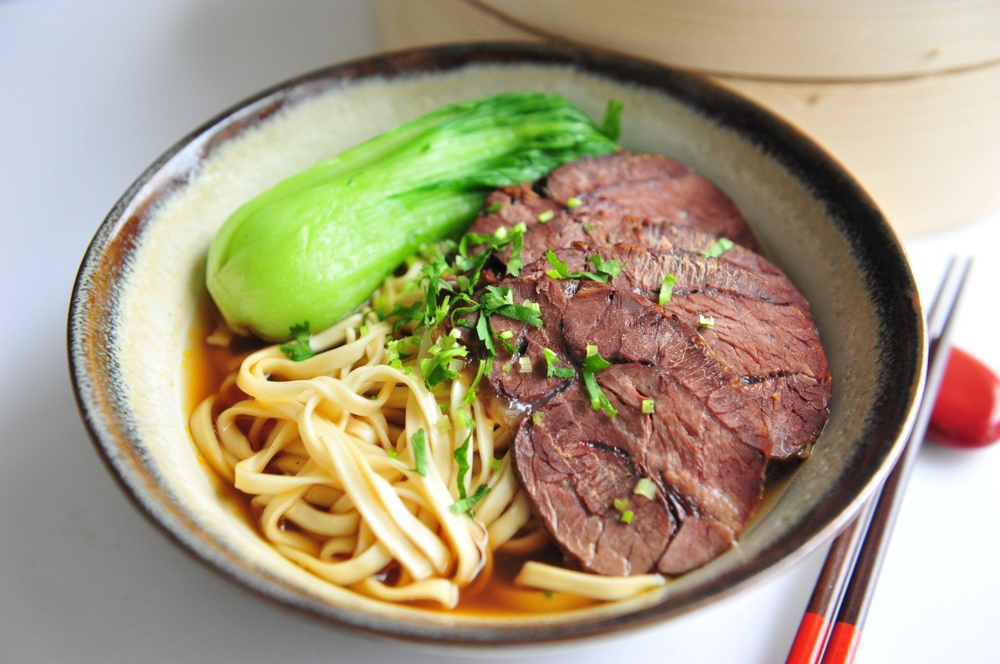
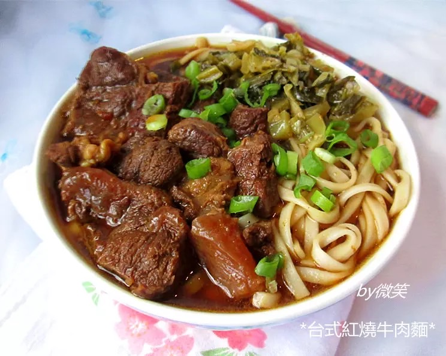
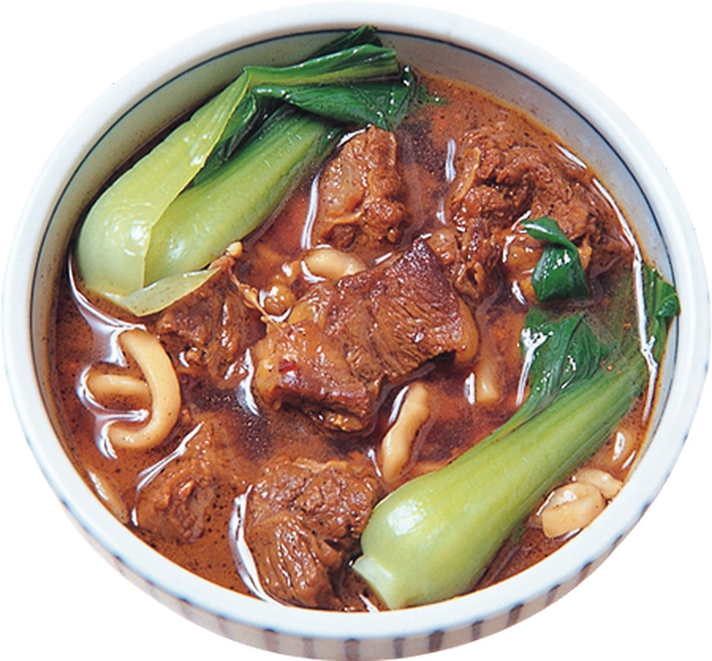

牛腩條或牛腱心切塊汆燙洗淨，
以油炒香薑片、豆瓣醬、甜麵醬後放入牛肉塊一起炒，
再下醬油膏炒勻後放入香料包、水及米酒，
放入切半的洋蔥、整顆蕃茄及大塊蘿蔔，一起滷30分鐘後熄火浸泡一晚。
起鍋。
  
炒米粉介紹 紅燒魚介紹 苦瓜鹹蛋介紹 心得
練習 影片 音樂
Your browser does not support the audio element. Your browser does not support the video tag.